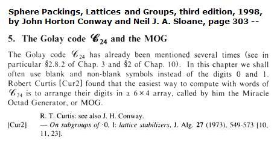

From the 1976 paper defining the MOG—
"There is a correspondence between the two systems of 35 groups, which is illustrated in Fig. 4 (the MOG or Miracle Octad Generator)." —R.T. Curtis, "A New Combinatorial Approach to M24," Mathematical Proceedings of the Cambridge Philosophical Society (1976), 79: 25-42
Curtis's 1976 Fig. 4. (The MOG.)
The Wikipedia article, like a similar article at PlanetMath, is based on a different definition, from a book first published in 1988—

I have not seen the 1973 Curtis paper, so I do not know whether it uses the 35-sets correspondence definition or the 6×4 array definition. The remarks of Conway and Sloane on page 312 of the 1998 edition of their book about "Curtis's original way of finding octads in the MOG [Cur2]" indicate that the correspondence definition was the one Curtis used in 1973—

Here the picture of "the 35
standard sextets of the MOG"
is very like (modulo a reflection) Curtis's 1976 picture
of the MOG as a correspondence between two 35-sets.
A later paper by Curtis does use the array definition. See "Further Elementary Techniques Using the Miracle Octad Generator," Proceedings of the Edinburgh Mathematical Society (1989) 32, 345-353.
The array definition is better suited to Conway's use of his hexacode to describe octads, but it obscures the close connection of the MOG with finite geometry. That connection, apparent in the phrases "vector space structure in the standard square" and "parallel 2-spaces" (Conway and Sloane, third ed., p. 312, illustrated above), was not discussed in the 1976 Curtis paper. See my own page on the MOG at finitegeometry.org.